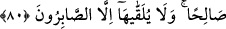
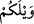

Bu dünya pazarında bir fayda varsa, onu kanâatkâr elde eder
Ya Rabbi, sen bana nimet olarak dervişliği ve kanâati ihsan et!
Molla Câmi der ki:
Sefil olan kanâat hazinesini nasıl elde edecek
Bu nakit, himmet ehlinin hazinesindedir
Şeyh Sâdî der ki:
A canım benim, bal için iğnenin acısını çekmeye değmez
İnsanın kendi pekmezine kanâat etmesi daha iyidir
et-Te’vîlaâtü’n-Necmiyye’de der ki: Onların bakışı, dünyanın hor ve hakirliği ile
birlikte basitliğine ve azlığına değil; onun büyüklüğü ile ziynet ve süsüne takıldı. Çünkü
onlar, nefsin kat kat zulümât ve karanlıklarından oluşan dünya muhabbet ve süsünün
gıdâlarıyla beslenip nefsin karanlık (zulümât) sıfatlarının bakışlarıyla baktılar. Onların
bu hâli; âhiretin izzet ve azametini, dünyanın hasislik ve horluğunu gördükten ve kalb
sıfatlarının nurlu bakışlarıyla bakmalarından sonradır. Çünkü süt emme (radâ’) tabiatı
değiştirir.
80. Kendilerine ilim verilmiş olanlar ise şöyle dediler: Yazıklar olsun size! Îman
edip iyi işler yapanlara göre Allah’ın mükâfatı daha üstündür. Ona da ancak
sabredenler kavuşabilir.
“Kendilerine ilim verilmiş” ahiret ahvâline muttali olan ve dünyaya rağbet etmeyen
vera ve takva ehli “olanlar ise” dünyâ nimetleriyle nimetlenen ve müreffeh bir hayat
süren kimselere “şöyle dediler:”
Dünyaya talip olanlar, “Yazıklar olsun size!” Allah’ın sevab ve mükâfatına râzı
olmamak, onunla yetinmeyerek dünyayı temennî etmek sizlere yakışmaz. “Îman edip iyi
işler yapanlara göre Allah’ın mükâfatı daha üstündür.”
“
” , “yazıklar olsun” mânâsına gelen bir bedduâ kelimesidir. Takdiri şöyledir:
“Allah size dâimî bir azâb ve helâk versin.” Tâhâ sûresinde geçtiği gibi bu kelime
hoşlanılmayan ve istenmeyen şeylerden sakındırmak için kullanılır.
“Ona da” yâni bu kerâmete de “ancak” tâatlere ve dünyanın zinet ve şehvetine
“sabredenler kavuşabilir.”